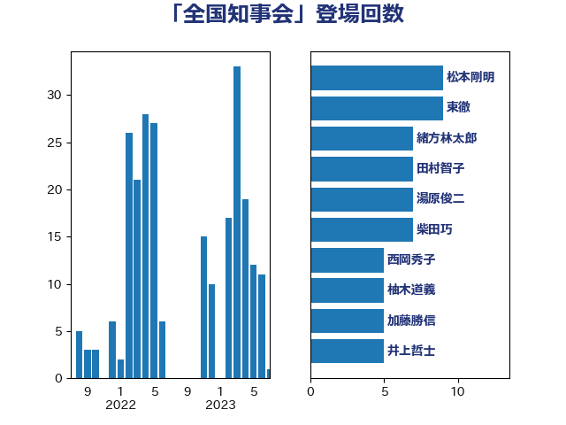

単語「全国知事会」

| 松本剛明 | 自由民主党 | 9 回 |
| 東徹 | 日本維新の会 | 9 回 |
| 緒方林太郎 | 無所属 | 7 回 |
| 田村智子 | 日本共産党 | 7 回 |
| 湯原俊二 | 立憲民主党 | 7 回 |
| 柴田巧 | 日本維新の会 | 7 回 |
| 西岡秀子 | 国民民主党 | 5 回 |
| 柚木道義 | 立憲民主党 | 5 回 |
| 加藤勝信 | 自由民主党 | 5 回 |
| 井上哲士 | 日本共産党 | 5 回 |
| 中司宏 | 日本維新の会 | 5 回 |
| 高橋千鶴子 | 日本共産党 | 4 回 |
| 赤嶺政賢 | 日本共産党 | 4 回 |
| 石井苗子 | 日本維新の会 | 4 回 |
| 永岡桂子 | 自由民主党 | 4 回 |
| 本田顕子 | 自由民主党 | 4 回 |
| 後藤茂之 | 自由民主党 | 4 回 |
| 尾身朝子 | 自由民主党 | 4 回 |
| 吉良よし子 | 日本共産党 | 4 回 |
| 中西祐介 | 自由民主党 | 4 回 |
| 紙智子 | 日本共産党 | 3 回 |
| 梅村聡 | 日本維新の会 | 3 回 |
| 岸田文雄 | 自由民主党 | 3 回 |
| 吉田とも代 | 日本維新の会 | 3 回 |
| 長浜博行 | 無所属 | 2 回 |
| 鈴木英敬 | 自由民主党 | 2 回 |
| 金子恭之 | 自由民主党 | 2 回 |
| 西村康稔 | 自由民主党 | 2 回 |
| 片山さつき | 自由民主党 | 2 回 |
| 渡辺猛之 | 自由民主党 | 2 回 |
| 松野博一 | 自由民主党 | 2 回 |
| 岩渕友 | 日本共産党 | 2 回 |
| 岡田直樹 | 自由民主党 | 2 回 |
| 山谷えり子 | 自由民主党 | 2 回 |
| 山本順三 | 自由民主党 | 2 回 |
| 宮本徹 | 日本共産党 | 2 回 |
| 塩川鉄也 | 日本共産党 | 2 回 |
| 坂本祐之輔 | 立憲民主党 | 2 回 |
| 嘉田由紀子 | 無所属 | 2 回 |
| 井坂信彦 | 立憲民主党 | 2 回 |
| 鰐淵洋子 | 公明党 | 1 回 |
| 高木かおり | 日本維新の会 | 1 回 |
| 階猛 | 立憲民主党 | 1 回 |
| 野間健 | 立憲民主党 | 1 回 |
| 遠藤良太 | 日本維新の会 | 1 回 |
| 谷公一 | 自由民主党 | 1 回 |
| 西田実仁 | 公明党 | 1 回 |
| 西村明宏 | 自由民主党 | 1 回 |
| 若松謙維 | 公明党 | 1 回 |
| 舞立昇治 | 自由民主党 | 1 回 |
| 自見はなこ | 自由民主党 | 1 回 |
| 竹詰仁 | 国民民主党 | 1 回 |
| 穀田恵二 | 日本共産党 | 1 回 |
| 福田昭夫 | 立憲民主党 | 1 回 |
| 神津たけし | 立憲民主党 | 1 回 |
| 石井準一 | 自由民主党 | 1 回 |
| 田島麻衣子 | 立憲民主党 | 1 回 |
| 玉木雄一郎 | 国民民主党 | 1 回 |
| 牧野たかお | 自由民主党 | 1 回 |
| 片山大介 | 日本維新の会 | 1 回 |
| 渡辺創 | 立憲民主党 | 1 回 |
| 浮島智子 | 公明党 | 1 回 |
| 泉田裕彦 | 自由民主党 | 1 回 |
| 梅谷守 | 立憲民主党 | 1 回 |
| 梅村みずほ | 日本維新の会 | 1 回 |
| 杉尾秀哉 | 立憲民主党 | 1 回 |
| 有村治子 | 自由民主党 | 1 回 |
| 早稲田ゆき | 立憲民主党 | 1 回 |
| 新垣邦男 | 立憲民主党 | 1 回 |
| 斉藤鉄夫 | 公明党 | 1 回 |
| 庄子賢一 | 公明党 | 1 回 |
| 川合孝典 | 国民民主党 | 1 回 |
| 島村大 | 自由民主党 | 1 回 |
| 山添拓 | 日本共産党 | 1 回 |
| 山口壯 | 自由民主党 | 1 回 |
| 小池晃 | 日本共産党 | 1 回 |
| 小林茂樹 | 自由民主党 | 1 回 |
| 小林一大 | 自由民主党 | 1 回 |
| 小川淳也 | 立憲民主党 | 1 回 |
| 大口善徳 | 公明党 | 1 回 |
| 堀場幸子 | 日本維新の会 | 1 回 |
| 勝部賢志 | 立憲民主党 | 1 回 |
| 倉林明子 | 日本共産党 | 1 回 |
| 伊波洋一 | 無所属 | 1 回 |
| 伊東信久 | 日本維新の会 | 1 回 |
| 中川郁子 | 自由民主党 | 1 回 |
| 中川康洋 | 公明党 | 1 回 |
| 上田清司 | 国民民主党 | 1 回 |
| 一谷勇一郎 | 日本維新の会 | 1 回 |